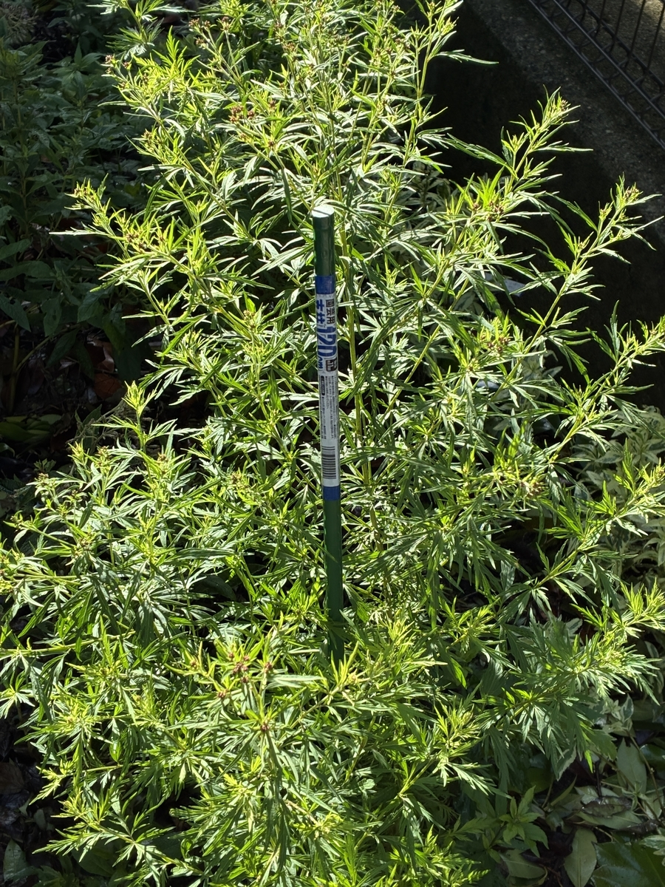
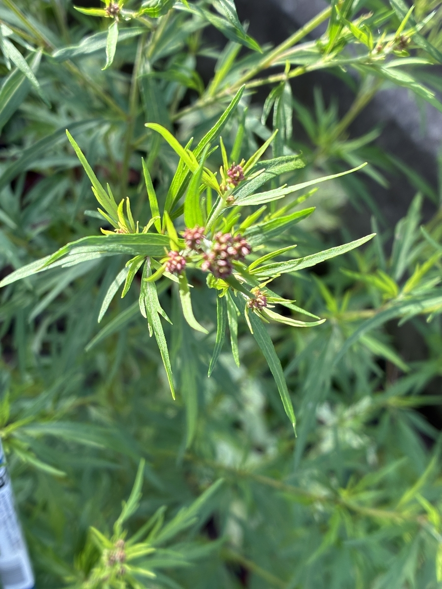

2025/09/20 わが家の観察記録
2025年8月9日の植え付けから約1か月と10日が経過しました。羽衣の生育は非常に早く、植え付け時に約70cmだった草丈は約100cmまで伸び、横方向にも大きく枝を広げています。
茎もしっかりと太くなり、株全体に勢いが出てきました。細かく切れ込んだ羽衣らしい葉が密に茂り、植え付け当初と比べると、短期間で株のボリュームが大きく増したことが分かります。

数え切れないほどの蕾を確認
特に目立つのが蕾の多さです。枝先のあちらこちらに花芽が形成され、数を数えるのが難しいほど、株全体が蕾で覆われるような状態になりました。
蕾は濃い紫赤色を帯びています。秋の開花に向けて、これから一つ一つの花房がどのように膨らみ、花を咲かせていくのか楽しみです。フジバカマ類はアサギマダラの代表的な吸蜜植物でもあるため、開花後には蝶が訪れることにも期待しています。

育てて感じる羽衣の旺盛さ
わが家で育ててみると、羽衣は一般的な園芸品種のユーパトリウムというより、秋に開花する原種系のフジバカマに近い性質を感じます。とくに今回の約1か月の変化からは、草丈の伸びだけでなく、枝数や株幅、蕾の形成まで非常に旺盛であることが分かりました。
まだ開花前ですが、この時点ですでに株全体に多数の蕾があります。今後は蕾の色づきと開花の進み方を観察していきます。
植え付けから約1か月と10日。草丈は約70cmから約100cmへ伸び、横にも大きく広がり、株全体に数え切れないほどの蕾が形成されました。
0 件